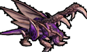

Website Creation August 23rd, 2024

behold. the website has been created. i wanna get those screenshots i got of the quantum grove to act as the background, but those are on a different computer so for now white will have to do. have this picture of a zergling.